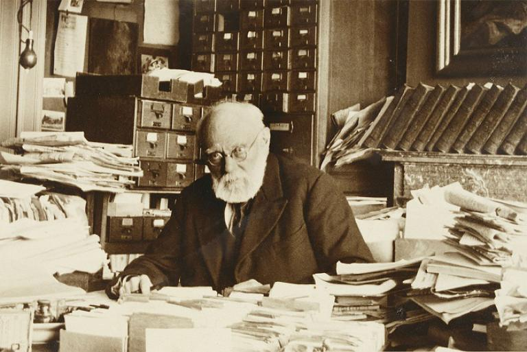
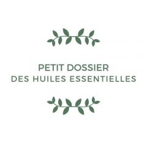
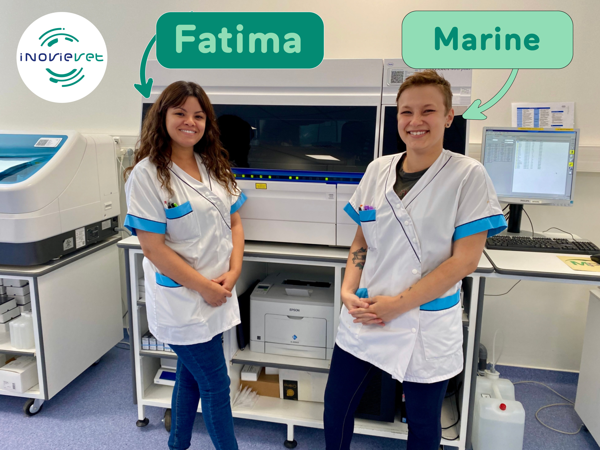
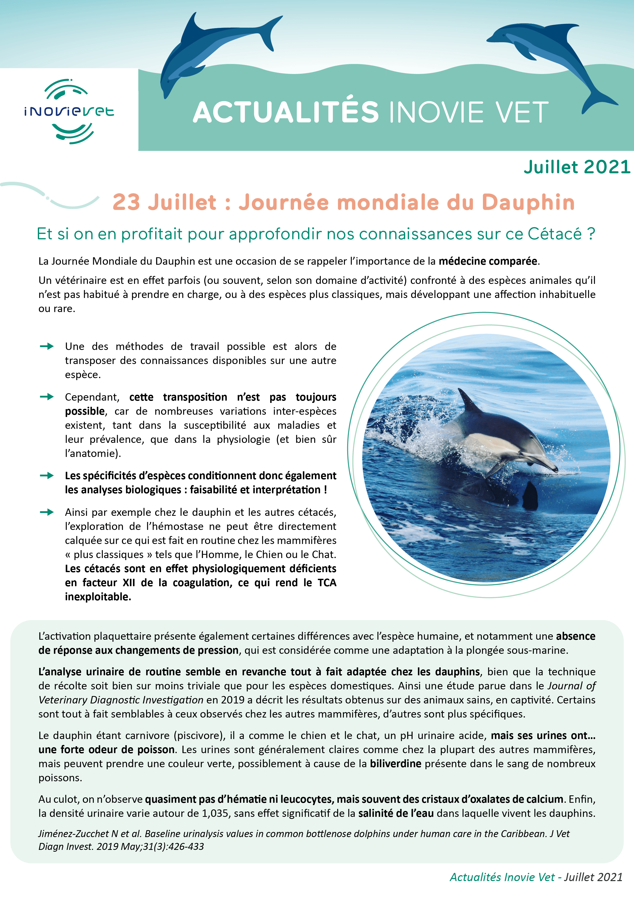
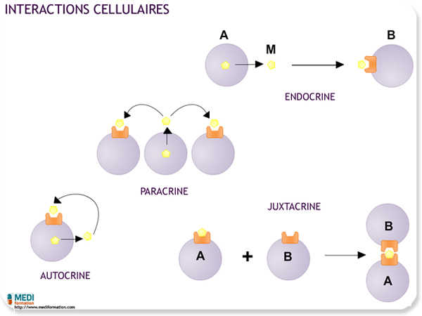
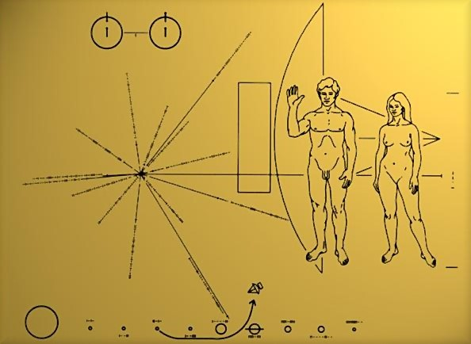

Le jour de mes 28 ans, j’assistais à la rentrée scolaire de la formation LP MIND.
Cette année de LP MIND a représenté un réel aiguillage dans mon parcours scolaire et professionnel.
Au travers de ce mémoire, je vais tenter d’expliquer de quoi le choix d’intégrer cette formation a découlé, en quoi il était judicieux, et les enseignements que j’en ai retirés.
D’où je viens ?
Faisant suite à un parcours pouvant sembler éclectique, mon cheminement au cours de ces dernières années m’a amenée à choisir la LP MIND comme pivot afin de consolider des bases acquises dans mes expériences précédentes, et m’enrichir de nouvelles connaissances. Cette formation m’a permis de confirmer cette réorientation, et de continuer mon évolution dans le domaine de la communication numérique.
Mon parcours est détaillé sur mon CV, que vous pouvez consulter ici. Il a été réalisé avec l'aide des templates HTML5up, et prévu pour les métiers de la communication. J'y détaille chacune de mes expériences et surtout ce que j'y ai appris. Il m'a servi notamment pour ma candidature en master, dont je parle davantage à la fin de ce rapport d'activités.
Dans les grandes lignes, depuis l’obtention de mon bac littéraire en 2011, j’ai connu des aléas d’espoirs et d’échecs qui m’ont fait évoluer et m’ont beaucoup appris.
J’ai appris entre autres la rigueur, le dévouement et la diplomatie lors de mes deux années d’expérience dans les pompes funèbres. J’y ai également appris la résilience après mon échec au concours national, arrivée 1 place trop bas sur plus de 500.
J’ai appris à élaborer des procédures et à les suivre méticuleusement, le travail en autonomie et en équipe, et le travail en anglais lors de mes deux années d’études de biologie. Ayant dû, pour intégrer cette licence, affronter une administration qui ne voulait pas de moi, mon bac littéraire en cause.
En parallèle de mon évolution dans mes études scientifiques, j’ai toujours occupé le poste à temps partiel de maquettiste, d’abord dans l’entreprise e-Node puis Plugin Masters, spécialisées dans l’édition de logiciels et de plugins.
J’y ai appris la mise en page de plusieurs documentations en anglais destinées aux professionnels de l’informatique. Leur version PDF a entièrement été réalisée sur InDesign (logiciel pour lequel j’ai suivi une formation en 2016), et chaque documentation a été adaptée en wiki, en utilisant un langage s’apparentant au HTML. J’ai également assuré la création et la maintenance d’un forum phpBB en ligne. J’y ai appris le travail en totale autonomie, ainsi que des notions de mise en page, de graphisme, et de web.
À la fin de ma deuxième année de licence de Biologie, une rencontre professionnelle a brutalement modifié mon parcours. C’est à l’occasion d’un stage au sein de la clinique vétérinaire Alliance à Bordeaux, que j’ai frappé à la porte du laboratoire du Dr Delphine Rivière. Une véritable alchimie professionnelle nous a menées à ne plus cesser notre collaboration, qui continue d'évoluer à ce jour.
À l’occasion de sa prise de poste en tant que directrice générale du laboratoire InovieVet à Montpellier, j’ai eu l’opportunité de la suivre en acceptant un poste de CDI dans ce même laboratoire.
Pourquoi la communication ?
Au cours de ces 4 dernières années, j’ai connu une évolution au sein de cette entreprise. D’abord technicienne, j’ai occupé le poste de responsable informatique du laboratoire, tout en m’orientant de plus en plus vers la communication.
Motivée par mes compétences en graphisme acquises grâce aux expériences citées précédemment, j’ai de moi-même créé plusieurs documents de communication, ma curiosité m’entrainant de plus en plus vers les outils web et numériques.
Cette reprise d’études était motivée d’une part par mon désir de m’épanouir davantage dans mon métier, tout en restant dans cette entreprise qui m’accompagne depuis plusieurs années, d’autre part par le besoin du laboratoire à cette période charnière de créer un pôle communication qui lui est propre.
La LP MIND
La formation de LP MIND offre un panel de cours diversifié autour de la médiation de l’information numérique et des données.
Les cours
Afin de présenter la formation dans son ensemble, j’ai choisi de la subdiviser en quatre grandes thématiques réunissant l’intégralité des cours et projets ayant eu lieu cette année :
Plusieurs cours ont permis d’appréhender la notion de donnée durant cette formation.
Parmi ceux-ci se trouvent :
Les cours théoriques autour de l’histoire et de la définition des données (théories du document à la donnée, open data / big data, métadonnées)
Les cours de travail de la donnée (bases de données, archivage / partage de données)
Théorie de la donnée, de 0 à 1
Afin de pouvoir réaliser une médiation de la donnée, il est nécessaire d’en comprendre la nature, l’utilité, l’évolution et l’ambition. Au travers des cours de théories du document à la donnée, nous avons étudié l’évolution de l’indexation et de la notion d’unité fondamentale de l’information, de l’Otletosphère à l’intelligence des algorithmes.

Paul Otlet à son bureau - Domaine public
Afin de pouvoir réaliser une médiation de la donnée, il est nécessaire d’en comprendre la nature, l’utilité, l’évolution et l’ambition. Au travers des cours de théories du document à la donnée, nous avons étudié l’évolution de l’indexation et de la notion d’unité fondamentale de l’information, de l’Otletosphère à l’intelligence des algorithmes.
Cette théorie, intimement liée à la notion d’indexation, les cours de métadonnées mêlaient alors indexation de la donnée et indexation de l'œuvre.
Au travers de l’étude des notions d’Open Data et Big Data, nous avons été sensibilisés à leurs enjeux dans notre monde actuel. Des enjeux tels que le sujet de notre dernier devoir citait «Data is the new oil», que l’on pourrait traduire littéralement par “les données sont le nouveau pétrole”.
Cette phrase met en lumière l’enjeu économique qui gravite autour des données, éléments précieux qui peuvent faire la puissance des entreprises capitalistes. Produites au quotidien, elles permettent aux géants de la technologie d’exploiter ces informations récoltées sur leurs clients ou utilisateurs. Elles promettent également des avancées technologiques pouvant changer nos vies. Par la promesse d’un avenir meilleur, et d’avancées scientifiques correspondant aux problématiques de notre époque, les données deviennent une ressource précieuse, symbole d’espoir, créant une vague sur laquelle ceux qui surfent s’enrichissent d’argent et de puissance, à l’instar de l’économie pétrolière.
Travail de la donnée, la base des bases
En mettant en pratique le travail de la donnée, au travers du cours de M. Le Vagueresse, nous avons compris l’utilité de la gestion d’une base de données à l’aide de Microsoft Access, et ses applications au quotidien dans le monde professionnel. Je suis personnellement confrontée quotidiennement dans mon travail à des bases de données, et j’ai pu y apprendre certains mécanismes qui m’ont aidé à en comprendre l’architecture et le fonctionnement.
Aux côtés de M. Perret, dont j’ai choisi de mettre le cours dans cette thématique, nous avons en réalité mis en pratique des connaissances acquises dans une multitude de cours de cette formation. De la veille au nettoyage, puis à l’architecture, et enfin à la visualisation des données par le biais des outils web, le projet OpendataSphère représente à mes yeux le point d’orgue de tout ce qui concerne les données au cours de cette formation. J’en décris plus loin dans ce rapport les détails et les enjeux.
La Veille
Dans un rôle de médiation, il convient de savoir récolter les informations par la veille. La veille est un processus de recherche, et de sélection pertinente d'informations sur une base régulière ou ponctuelle.
Les cours ayant traité de cette thématique sont ceux de médiation documentaire et de médiation collaborative.
Médiation documentaire, le MIND REPORT
L’un des projets phares de la LP MIND, ayant connu une régularité et gagné en qualité au fil des années et des promotions, est la newsletter de la formation, le MIND REPORT.
Mind Report - LP MIND
Comme nos prédécesseurs, nous avons eu la responsabilité d’alimenter cette newsletter mensuelle, en sachant rechercher des informations vérifiées, pertinentes, récentes, et pouvant intéresser notre audience. Bien que nous n’ayons que peu évoqué la théorie de la veille journalistique, nous avons eu accès à une liste de sources à surveiller, sûres et cohérentes avec le MIND REPORT en termes de sujets abordés (Le Journal CNRS, NVIDIA, WIRED, Science Direct, Archimag, Numerama), et évoqué les bases de la veille en mentionnant notamment les techniques pull/push.
Médiations collaborative, un projet-marathon
Ce projet a représenté le premier gros projet de cette année. M. Bouniol nous a donné la tâche de créer une entité qui devait alimenter quotidiennement plusieurs plateformes de médiation en ligne, avec un partage de contenu de qualité, cohérent avec l’identité de notre projet, pendant 40 jours.
Il est selon moi dommage que cette matière, qui nécessitait des compétences en veille, en communication, et en community management, ait eu lieu avant tous les cours qui traitaient de ces sujets, et il est évident que si ces cours avaient été inversés pendant l’année, la qualité de ce projet s’en serait ressentie.
Je m’attarderai plus en détail au sujet de ce devoir dans la sous-partie dédiée aux projets notables.
Médiation et communication numériques
Cette catégorie réunit tous les cours nous ayant permis d’apprendre à connaître les outils de communication numérique, mêlant théorie et pratique.
On y retrouve :
Les cours pratiques dédiés à un support de médiation en particulier (photo, vidéo)
Les cours nous ayant apporté les bases nécessaires à la création web (langages du web, ergonomie)
Les cours d’introduction à la visualisation et manipulation de données (théorie des réseaux, médiation de données, visualisation)
Le cours traitant de l’utilisation des réseaux sociaux comme outils de communication (community management)
Le cours de droit appliqué aux métiers de la communication
L’audiovisuel et ses outils
Ces cours, dispensés par M. Caro et Mme Lataste, nous ont apporté les bases théoriques strictement nécessaires à la bonne réalisation d'œuvres audiovisuelles. N’ayant pas pour vocation à être des cours magistraux, le but était d’accéder rapidement à la partie pratique, afin de se familiariser avec les outils d’enregistrement puis de retouche photo, ou montage vidéo, nous avons eu accès à du matériel et pu expérimenter pour en comprendre le potentiel et les limites.
Interview de Napo - Marie Ganter
En raison du contexte sanitaire, le projet du cours de photo a dû être adapté pour devenir réalisable de chez-soi, ce qui m’a donné l’occasion de travailler mon adaptation aux conditions imprévues.
Le projet vidéo pour sa part fut subdivisé en deux parties : le tournage et le montage.
Alors que le tournage a été réalisé en groupe, aux côtés de Sophie Metsemakers et Zoé Dorizy, le montage était individuel, afin que chaque élève puisse se confronter au logiciel et obtenir un résultat qui lui ressemble.
Le point fort de ce cours fut à mon sens le rythme proposé pour les étapes de montage, sous forme de «workshop» en journées complètes. Cela a créé une réelle immersion dans le projet, étant donné qu’une telle activité nécessite une grande concentration plusieurs heures durant. Ce workshop nous a permis de conserver une cohérence et de ne pas perdre le rythme ni l’élan pris au début de celui-ci. Il a également facilité l’échange avec Mme Lataste tout au long du processus de création, ainsi qu’entre camarades plus ou moins expérimentés en la matière.
Le web, ou comment uniformiser le niveau d’une classe éclectique
Au travers de cours théoriques (avec M. Méaux par exemple) et de projets pratiques (avec M. Caro), nous avons pu nous initier à des éléments de base indispensables dans les métiers de la communication numérique actuels : les langages HTML, CSS, les bases de l’ergonomie et de la création de site web.
Cette formation ayant ouvert ses portes à des étudiants venant de parcours très variés, il existait une grande inégalité de niveau dans certaines matières en début d’année entre les élèves de la formation, et ceci était particulièrement visible dans ces matières du web. Alors qu’une partie d’entre nous avaient déjà développé des sites web, d’autres n’avaient jamais utilisé la moindre balise HTML ou un CMS (tel que Wordpress, dont nous nous sommes beaucoup servis). Ces cours ont permis de lisser ces inégalités au travers d’une théorie qui reprenait les bases des langages HTML et CSS, et du développement de site web avec ou sans CMS, puis d’une mise en pratique avec la réalisation d’un rapport LateX et la mise en ligne d’un site web.
J’ai personnellement profité de ces cours pour approfondir mes connaissances de Wordpress, et j’ai dédié le projet de création de site web à une jeune marque de bougies Bordelaise, qui s’en sert désormais comme vitrine de ses produits.
Site Web LaQueerBogossite - Illustrations : Marie Ganter
La visualisation de données, une multitude de choix dans les outils
La formation LP MIND s’intéressant particulièrement à la donnée, il va de soi que nous avions besoin d’en étudier la médiation et au travers de celle-ci, la visualisation.
En effet, comment faire parler une donnée sans la rendre visuelle, comparable ? Selon Axysweb.com : «La visualisation de données moderne a commencé à se développer au XXème siècle. C’est une technique qui vient juste après la préparation des données. Elle vise à rendre accessible et compréhensible plusieurs informations grâce à des représentations visuelles. La data visualisation permet de communiquer des données brutes en les transformant en graphiques visuels simples à lire en un coup d’œil.»
Ainsi, nous avons pu nous y essayer au travers de trois cours : théorie des réseaux, médiation de données, visualisation.
En théorie des réseaux, nous avons pu mettre en valeur des données extraites du web, en utilisant entre autres Tableau Public, une plateforme gratuite permettant de publier et d'explorer des visualisations de données en ligne.
Lors des cours de médiation des données, outre la sensibilisation aux différentes licences creative commons et aux outils open source et collaboratifs comme Openstreetmap. Nous avons aussi eu l’occasion de rencontrer des professionnels et de travailler sur un support de présentation de leur entreprise, qu’ils pourront s’ils le souhaitent, réutiliser dans le cadre de leur activité professionnelle.
Enfin, avec le cours de visualisation, nous avons exploré divers outils en ligne, et créé des multitudes de visualisations de données, qu’elles soient temporelles, quantitatives ou spatiales. J’ai personnellement l’impression d’avoir en peu de temps démultiplié mes possibilités grâce aux outils évoqués (knightlab, infogram, Illustrator, et même simplement Google Sheets) et il est évident que je réutiliserai certains d’entre eux dans mes projets professionnels. À l’occasion de l’évaluation de ce cours, il nous a été demandé de mettre en ligne un portfolio, en utilisant un nouvel outil HTML5up, dont j’aurais beaucoup aimé que nous prenions le temps d’approfondir l’apprentissage, plus tôt dans la formation, car il nous aurait été fort utile pour certains autres projets, notamment en ergonomie et langages du web.
Le community management, clé d’une stratégie de communication moderne
Ce cours dispensé par Adriana Peyruse, nous a offert un tour d’horizon des principaux outils «social media», dont il est nécessaire de connaître le fonctionnement lorsqu’on souhaite s’orienter vers un avenir de responsable de communication ou de community manager.
Après une présentation de ces outils, nous avons été confrontés à des cas pratiques, dont le dernier consistait en la création d’une stratégie social média complète pour une jeune entreprise dont deux personnes de l’équipe sont venues nous présenter les enjeux et les projets, avant d’assister à la présentation de notre travail.
D’un point de vue personnel, c’est l’un des cours que j’ai préféré dans cette formation, car il mêlait à la fois théorie et mise en pratique, tout en collant parfaitement à mon projet professionnel.
J’y ai en effet retrouvé des problématiques auxquelles j’étais confrontée dans mon travail en alternance, et j’ai pu y apporter des solutions en prenant appui sur mes supports de cours.
Les bases du droit en création et médiation numériques
Bien que moins dynamique et plus théorique, ce cours dispensé par M. Daverat n’en était pas moins intéressant et nécessaire à cette formation, et à mon projet professionnel. Il est en effet indispensable de connaître les bases du droit d’auteur lorsqu’il fait partie de notre travail au quotidien de créer, ou de réutiliser (par le biais de banques d’images par exemple) des supports de communication audiovisuels.
La Communication
Dans cette quatrième et dernière grande thématique, j’ai choisi de réunir les matières citées ci-dessous.
J’aurais pu y ajouter le community management, qui nous a entre autres appris à développer des stratégies complètes de communication social media, mais étant focalisée sur ces outils précis, j’ai trouvé plus judicieux de laisser cette matière dans la thématique précédente.
Les cours proposaient :
La théorie de la communication (théorie de l’information et de la communication, culture de l’information et des médias)
La mise en place de la communication (méthodologies, architecture de l’information, anglais)
L’ABC de la communication : c’est quoi ?
Les cours de théorie de l’information et de la communication, dispensés par Mme Pinède, et de culture de l’information et des médias, en partie dispensés par Mme Roumanos, nous ont ouvert les portes du savoir de la communication.
Son histoire, ses grands principes, ses domaines d’application, on ne s’improvise pas professionnel de la communication, bien que tout le monde communique d’une manière ou d’une autre.
Il est nécessaire d’en comprendre les fondements avant d’envisager de les appliquer dans un domaine professionnel, afin d’adapter son discours à son interlocuteur, et d’étudier la stratégie la plus pertinente en fonction du sujet, de la cible, et de l’objectif recherché.
Dans le cas de mon expérience professionnelle, ces cours m’ont apporté des bases dont je me suis servie par la suite dans la réalisation de plusieurs stratégies de communication en fonction des projets.
Le B-A BA de la communication : comment on fait ?
Une fois en avoir saisi les fondements, il importe lorsqu’on s’oriente vers un avenir dans la communication, d’en aborder la méthodologie et les différents moyens d’application de cette discipline.
C’est donc logiquement que nous avons suivi des cours de méthodologies, où nous avons notamment appris comment récolter une information pertinente dans le cadre d’une étude, avec l’utilisation des formulaires qui, bien qu’elle puisse sembler simple de prime abord, nécessite en réalité une technique et une précision anticipées afin de rester impartial mais d’obtenir des informations facilement traitables. Nous avons ensuite cherché à organiser les réponses, cet exercice a fait le lien avec le cours d’architecture de l’information, là encore une discipline nécessaire dans un rôle de médiation, afin de s’assurer de la clarté et de la justesse de l’organisation des informations.
À l’occasion de ce cours, nous avons mis en place un support d’étude, faisant le lien avec les cours précédents de M. Le Deuff, liant architecture de l’information, méthodologies, et le concept même de Data Literacy. Je décris ce projet plus en détails dans le chapitre suivant.
Enfin, l’anglais est incontournable lorsqu’on souhaite communiquer de nos jours, en particulier sur des supports numériques. Selon cette dataviz de Pascaline Boittiaux, data journaliste, 52,3% du contenu sur l’ensemble du web est anglophone. Nous avons donc naturellement pu nous exercer au travers de divers travaux, à la présentation de sujets d’actualités, de rapports de recherche, et de projets de groupes ou individuels.
Projets notables
L’OpenDataSphère
Cahier des charges : Constitution d’un nouveau jeu de données sur l’Opendata francophone.
La thématique est l’open data francophone ; l’objectif est de constituer un graphe représentatif, non exhaustif, des acteurs de ce champ. On entend « acteurs » au sens large (en référence à la théorie de l’acteur-réseau) : humains, institutions, objets, discours…
Conditions à respecter :
Le graphe doit comporter 100 entités maximum.
Définir une typologie d’entités.
Définir les métadonnées à renseigner pour chaque entité.
Répartition des tâches : projet de groupe réunissant toute la classe de LP MIND.
Gestion de projet, assurée par une personne qui fait notamment la liaison entre l’enseignant et la promotion, et s’appuie sur un board Trello
Recherche et saisie d’information (alimenter une base de données)
Suivi éditorial, contrôle documentaire (harmoniser les données, contrôle qualité)
Conception artistique (définir la typographie, les couleurs, l’iconographie du site)
Intégration web (modifier des fichiers HTML, CSS et JavaScript, mettre en ligne)
Rédaction de textes pour présenter le projet (README, billet de blog)
Pour la réalisation de ce projet, je me suis proposée en tant que personne en charge de la gestion de projet. Avec l’accord de mes camarades, j’ai donc endossé ce rôle.
OpenDataSphère, vue d’ensemble - LP MIND
J’ai également rejoint l’équipe de rédaction d’un article medium, destiné à expliquer en détails le déroulé et les ficelles du projet, afin de mettre en valeur le travail que nous avons fourni, et d’en résumer le but.
OpenDataSphère, fiche individuelle - LP MIND
Ce projet m’a beaucoup appris puisque j’ai pu naviguer entre les différentes équipes et voir chacune des étapes, grâce à mon rôle de gestionnaire de projet.
J’ai obtenu une excellente note à cette occasion (19/20) ce qui m’apporte beaucoup de fierté et m’a aidée à gagner confiance en moi dans un rôle de leadership, m’ayant demandé de mettre à profit mon sens de l’organisation, de la centralisation, des priorités et de l’encouragement des différentes équipes.
Nous avons eu la fierté d’être cités par Samuel Goëta de Datactivist, ce qui nous a donné une validation et une valorisation de notre travail accompli et de nos compétences.
Le Projet Data Literacy
La Data Literacy se présente en toute logique comme la notion qui conclut notre année. La littératie des données - du terme anglais data literacy - est communément appelée «la culture de la donnée ». L’idée derrière ce terme est de définir la capacité d’une personne à comprendre, analyser et donner du sens aux données.
Cela correspond tout à fait à l’enjeu de la LP MIND elle-même. Nous devions alors nous positionner comme experts de cette discipline et proposer un outil d’évaluation accessible, disponible en ligne, clairement organisé, assorti d’un rapport autour de la réalisation de cet outil.
Projet Data Literacy, Personas - illustration par Zoé Dorizy
Cahier des charges : réalisation d’un questionnaire d’auto-positionnement sur la littératie des données.
Divisés en deux groupes de 5 et 6, nous avions un certain nombre de livrables à fournir, selon la liste qui suit :
Une matrice de compétences en data littératie
Une création de personas avec des profils dédiés
Une série de questions à choix multiples (entre 20 et 50) permettant d’identifier les différents niveaux ou personas
Réalisation d’une maquette de site web
Réalisation d’un prototype
Très complet, ce travail nous a demandé rigueur et organisation au vu du nombre de livrables demandés. Nous nous sommes rapidement organisés en sous-groupes au sein de notre groupe de 5 personnes, et avons réussi à mettre au point une méthodologie adaptée à la production d’une suite de questionnaires fonctionnels, organisés en fonction des personas développés, le tout mis en ligne sur un site dédié, à la charte graphique cohérente, et réfléchi pour offrir la meilleure expérience utilisateur possible.
Illustration du projet Data Literacy - illustration par Zoé Dorizy
1 Jour 1 Plante
Premier projet d’une telle envergure de l’année, le devoir de médiations collaboratives s’est organisé en groupes de 2 à 3 personnes, et a eu lieu tout au long d’une période de 40 jours.
Logo de la page 1 Jour 1 Plante - illustration par Blandine Serre
À cette occasion, j’ai, aux côtés de mes camarades Blandine Serre et Aurélien Chaix-Renou, participé à la création de la page 1 Jour 1 Plante, visant à mettre en avant les bienfaits des plantes dans plusieurs utilisations : la santé, la nutrition, l’hygiène.
Dans cet exercice de veille et de retransmission de l’information, ayant choisi une thématique pouvant être très glissante étant donné la multitude de sources peu fiables dans le domaine de la santé, nous avons été confrontés à l’exercice de choix et d’analyse poussée de chacune de celles-ci avant leur publication.
Nous avons ensuite commencé à évoquer les différents médias à utiliser en fonction de notre cible et de notre stratégie, puis nous avons dû créer une image, une charte graphique, une identité qui réponde à celles-ci.
Le choix s’est porté sur une page Facebook, assortie d’un compte twitter.
Page facebook 1 Jour 1 Plante - illustrations par Blandine Serre
La page Facebook a connu davantage de succès que le compte twitter, probablement pour diverses raisons dont entre autre :
Le manque d’expérience de chacun des membres du groupe sur ce réseau social
Une mauvaise répartition des tâches
Mon absence pendant une grande partie du projet de posts quotidiens, étant donné que j’étais à ce moment là, la seule élève de la classe en alternance
J’ai eu l’occasion de m’entrainer au travail de groupe sur des outils collaboratifs (Discord, GoogleDocs, GoogleSheets), à la supervision d’une équipe dans le but d’homogénéiser le contenu (étant une entité seule, il était important de conserver un ton cohérent à chacun de nos posts, quelle que soit la personne qui l’avait préparé en amont), et de me familiariser avec des réseaux sociaux que j’utilisais jusqu’alors que très peu.

Logo « Petit dossier des huiles essentielles » - illustration par Marie Ganter
Nous avons ensuite eu la mission d’élaborer un contenu propre à chacun des membres du groupe, ce qui m’a permis de continuer mon apprentissage de Wordpress, puisque j’ai créé à cette occasion le petit dossier des huiles essentielles.
L’intégralité du contenu de ce site a été rédigé par mes soins, suite à une sélection de sources. J’ai également créé toutes les illustrations en utilisant des images libres de droit, et intégré un questionnaire Typeform afin de favoriser l'interactivité avec le visiteur.
Enfin, il nous a été donné l’occasion d’organiser un événement fictif. Nous avons imaginé l'événement 1 Jour 3000 Plantes.
présentation de l’évènement fictif « 1 jour 3000 plantes » - illustration par Marie Ganter
Il s’agit d’une journée, se déroulant au Jardin Botanique de Bordeaux, au cours de laquelle, le visiteur peut se laisser guider par un programme réunissant tous les aspects de l’herboristerie, au travers d’un atelier de créations de cosmétiques, d’un repas végétarien, et d’une visite guidée du jardin par un spécialiste du domaine.
N’ayant jamais eu la chance de travailler sur un sujet d'événementiel auparavant, ce fut très instructif et je suis globalement assez satisfaite du projet que nous avons rendu, compte tenu du fait que nous n’étions alors qu’au premier semestre de formation.
Acc’ESS
Le cours de community management nous a été donné par Adriana Peyruse, ancienne élève de Sciences-Po Bordeaux.
Axé autour de la mise en place de stratégies de communication adaptées aux social medias, ce cours a donné lieu à un projet qui nous a permis de mettre en pratique ces compétences, pour le compte d’une Junior-Entreprise d’élèves de Sciences-Po.
ACC’ESS est une junior entreprise créée par les étudiants M1 ESSIS (Economie Sociale et Solidaire, Innovation Sociale) de Sciences Po Bordeaux axée sur le conseil vers les sociétés coopératives d’intérêt collectif (SCIC).
Proposition de nouveau Logo pour l’entreprise Acc’ESS - Zoé Dorizy
Nous avons assisté à une présentation de celle-ci, pour comprendre leurs enjeux et ambitions de développement. Leur entreprise repose sur l’accompagnement de leurs prestations par des encadrants professionnels (professeurs et alumnis bénévoles) et les valeurs intrinsèques de l’ESS.
Il nous a été confié la mission de réaliser en petits groupes une stratégie social media complète, que nous avons assortie d’une refonte totale de la charte graphique, ainsi que d’un planning de publication.
Notre groupe, composé de 3 personnes (Zoé Dorizy, Blandine Serre et moi-même), a travaillé via des outils collaboratifs (Google docs, Canva, Discord) pour produire ce contenu en un temps réduit, assorti d’un support de présentation orale.
Nous avons entrepris un benchmark de la concurrence, puis une analyse de la communication actuelle de l’entreprise. Nous avons étudié la charte graphique et l’avons adaptée d’un point de vue accessibilité et communication, afin de la rendre plus attrayante et d’augmenter les contrastes.
Proposition de charte graphique, extrait de la présentation - Marie Ganter
Ensuite, nous avons identifié les cibles, et déterminé les plateformes adéquates en fonction de celles-ci et des besoins en communication de l’entreprise, tout en prenant en compte le réalisme et la faisabilité de la maintenance des réseaux sociaux par les personnes en charge de l’entreprise, non formées à la communication.
Nous avons ensuite créé des rubriques assorties de templates, et pour chacune d’entre-elles, nous avons proposé un exemple.
Enfin, nous avons présenté un planning de publication réunissant tous les réseaux sociaux envisagés, et chacune des rubriques élaborées.
Proposition de calendrier de posts, extrait de la présentation - Marie Ganter
Lors de la présentation, l’entreprise semblait satisfaite de nos propositions, et nous leur avons envoyé l’intégralité de notre travail, puis mis à disposition le logo que nous avions créé au format vectoriel, ainsi que la charte graphique.
Le Portfolio
Pour conclure cette année, M. Borel nous a proposé la réalisation d’un portfolio web, réunissant chacun de nos travaux en dataviz, ainsi que d’autres travaux visuels au choix.
Pour ce faire, nous avons utilisé les templates disponibles sur HTML5up, et nos compétences acquises en langages du web pour les personnaliser à l’aide de code HTML et, pour ma part, en l’agrémentant d’un peu de CSS.
Accueil du portfolio - Marie Ganter / HTML5up
Je l’ai hébergé sur le github que j’avais créé à l’occasion du cours de médiations collaboratives de M. Bergeot.
J’y présente une partie de mes travaux réalisés dans le cadre de la LP MIND, divisés en trois catégories : les créations graphiques, les datavisualisations, et les créations web.
Présentation de créations graphiques sur le Portfolio - Marie Ganter / HTML5up
Très formateur, la création d’un tel projet demande de mettre à profit un sens de la résolution de problèmes par la recherche autonome de solutions, caractéristique des missions s’apparentant au développement web.
Ainsi, ce projet permet à mes yeux d’en apprendre bien plus que des dizaines d’heures de cours théoriques, et j’ai réellement l’impression d’avoir monté en compétences dans ce domaine grâce à celui-ci
L'alternance
Dans le cadre de mon évolution, l’alternance était pour moi cette année une condition sine qua non à ma reprise d’études, étant donné mon âge, mes obligations financières personnelles, et parce qu’il me semblait indispensable de lier cette année de cours à une formation en entreprise, en particulier dans le cadre d’une licence professionnelle.
Mon employeur, le laboratoire InovieVet, ainsi que Floriane Moine, responsable de la communication du Groupe INOVIE ont accepté de m’accompagner dans cette formation en alternance.
Le laboratoire InovieVet
Fiche signalétique
Raison sociale : INOVIE C VET
Forme juridique : Société par actions simplifiée
Date de création de l’entreprise : 10-10-2017
Président : Dr Arnaud Creton
Directrice Générale : Dr Delphine Rivière
Adresse du siège social : 90 RUE NICOLAS CHEDEVILLE 34070 MONTPELLIER
InovieVet est un laboratoire consacré à la biologie vétérinaire, inscrite au tableau de l’Ordre des vétérinaires sous le n°505594.
Filiale du Groupe INOVIE, InovieVet est l’alliance de l’expertise vétérinaire et d’un groupe leader en biologie médicale permettant de bénéficier d’une logistique internalisée et d’une assurance qualité qui a fait ses preuves.
L’équipe est composée de 3 vétérinaires :
Dr Arnaud CRETON, président, biologiste médical des laboratoires Medilab66 (Groupe INOVIE) et docteur vétérinaire
Dr Delphine Rivière, directrice générale et docteure vétérinaire cytopathologiste
Dr Typhaine Lavabre, docteure vétérinaire et cytopathologiste
Vétérinaires InovieVet - InovieVet
De 4 personnes sur le plateau technique :
Fatima-Zahra Arabi, technicienne de laboratoire et manager de l’équipe technique
Marine Folchet, technicienne de laboratoire et chargée de la gestion des stocks
David Sanchez, technicien spécialisé en bactériologie vétérinaire
Ludivine Cavalie, technicienne qui rejoindra l’équipe à la fin du mois d’août

Fatima Arabi et Marine Folchet, techniciennes InovieVet - InovieVet
Et de 3 personnes à distance :
Dr Antoine Vinclair, directeur financier et biologiste médical du Groupe INOVIE
Et moi-même, chargée de communication du laboratoire
Acteurs du secteur :
En France, plusieurs laboratoires d’envergure similaire se partagent le territoire national. Parmis les principaux concurrents, on compte notamment :
Cerbavet, filiale du groupe de biologie médicale Cerballiance
IDEXX, laboratoire dédié à la biologie vétérinaire également implanté à l’international
Vebio, laboratoire de taille et spécialités comparables à InovieVet et Cerbavet
Nous sommes également partenaires de plusieurs laboratoires aux spécialités complémentaires à celles d’InovieVet :
Orbio, dont la gamme d’analyses est similaire à celle d’InovieVet, mais qui réalise certaines analyses (l’endocrinologie de pointe, notamment dans le cadre de la reproduction des chevaux, et la sérologie, qui permet de détecter la présence ou non d’anticorps et leur proportion dans le sang, afin de diagnostiquer des maladies virales ou non) pour lesquelles nous faisons appel à leur équipe technique.
Le LAPVSO, dont la spécialité est l’anatomopathologie, et à qui nous sous-traitons toutes les analyses d’histologie. Ces analyses font généralement suite à l’extraction d’un prélèvement par chirurgie, et dans la plupart des cas, servent à en déterminer la nature (tumorale ou non).
Scanelis, reconnu pour son expertise en PCR, et à qui nous faisons appel pour la réalisation de ces analyses. La PCR, Polymerase Chain Reaction ou réaction de polymérisation en chaîne, est une technique d’amplification et de détection de brins d’ADN, servant par exemple à rechercher la présence d’un virus dans un prélèvement. Notre directrice générale, le Dr Delphine Rivière y a d’ailleurs travaillé pendant 7 ans.
Le Laboratoire Départemental EVA31, laboratoire agréé pour réaliser certaines analyses nécessitant une accréditation gouvernementale, à qui nous envoyons les titrages d’anticorps antirabiques (analyse réalisée en général avant un départ à l’étranger avec un carnivore domestique, afin de vérifier son statut vaccinal contre la rage, en fonction du pays de destination).
Mon parcours au sein de l’entreprise
À la suite de deux années d’études en biologie j’ai, à l’occasion d’un stage de fin d’année, rencontré le Dr Rivière, cytopathologiste, qui travaillait alors à Bordeaux, à son propre compte sous l’identité CVET en tant que laboratoire spécialisé dans la cytopathologie.
Depuis notre rencontre, nous n’avons jamais cessé notre collaboration, et j’ai pu à ses côtés me familiariser petit à petit avec la biologie vétérinaire.
D’abord technicienne en cytopathologie, puis assistante, nous avons déménagé au cours de l’été 2019 à Montpellier, pour rejoindre le laboratoire InovieVet dont le Dr Rivière a eu l’opportunité de devenir la directrice générale.
Au sein de ce laboratoire, j’ai signé un CDI en tant qu’assistante de laboratoire, et mes missions n’ont eu de cesse d’évoluer, pour représenter au bout d’un an les diverses spécialités suivantes :
Technique de laboratoire en cytologie
Secrétariat du laboratoire
Paramétrage de l’outil informatique du laboratoire
Service client
Journées de garde du laboratoire en autonomie un samedi sur trois
Début de création d’outils de communication à la demande de certains clients
À l’occasion du confinement de mars à mai 2020, j’ai traversé une période de remise en question de mon projet professionnel, et j’en ai profité pour réfléchir à mes aspirations pour le futur.
C’est alors que j’ai naturellement ressenti une attirance envers la communication, après plusieurs années d’un parcours hétéroclite, dont le fil rouge a toujours été une envie de créativité, un besoin de travailler de manière plus indépendante, non linéaire, de nouveautés, ainsi que plusieurs aspects de ma personnalité.
Étant quelqu’un de très organisée, férue d’outils numériques, j’aime la création encadrée, la rédaction de protocoles, l’argumentation, et le travail en autonomie.
Cette longue réflexion qui s’est imposée à moi alors que nous traversions notre première période de confinement national, et de chômage partiel pour ma part, m’a permis de tirer une conclusion qui a continué à s’affiner de plus en plus.
Mes projets et envies étaient alors :
D’obtenir un niveau de diplôme plus élevé
De me former à la mise en pratique de divers outils que je connaissais déjà mais que je n’avais jamais eu l’occasiond’exploiter dans un cadre professionnel
D’apprendre les bases de la communication
D’évoluer au sein de mon entreprise
Après discussion avec les responsables du laboratoire InovieVet, en particulier avec le Dr Delphine Rivière et le Dr Antoine Vinclair, il a semblé judicieux que mon accompagnement se fasse dans le but de créer le poste jusqu’alors inexistant de chargée de communication du laboratoire.
Jusqu’alors, la communication du laboratoire était gérée par Floriane Moine, responsable de la communication du Groupe INOVIE.
Néanmoins, il semblait nécessaire de créer ce poste dédié à sa communication, pour plusieurs raisons, dont les suivantes :
l’évolution de l’activité du laboratoire InovieVet
la grande différence entre les cibles du groupe et celles du laboratoire
ma motivation à occuper ce poste
l’arrivée de projets majeurs dans la vie du laboratoire
Ainsi, depuis le début de l’année scolaire 2020/2021, je suis alternante en tant que chargée de communication du laboratoire InovieVet, sous la tutelle de Floriane Moine.
Le Groupe INOVIE
Fiche signalétique de Labosud, maison mère du Groupe INOVIE
Raison sociale : LABOSUD
Forme juridique : Société d'exercice libéral par action simplifiée
Date de création de l’entreprise : 10-01-1984
Président : Dr Yoann EHRHARD
Directeurs Généraux : Dr Jean-Michel REAL, Dr Frederic CHARRIER, Dr Franck CORDOBA, Dr Pauline FROMENT, Dr Benjamin MARSON
Logo du Groupe INOVIE
Adresse du siège social : 90 RUE NICOLAS CHEDEVILLE 34070 MONTPELLIER
Créé en 2010, le Groupe Inovie est un acteur majeur du diagnostic représentant 15% de l’activité de biologie médicale privée en France, et est présent également à l’international avec des laboratoires au Maroc et au Liban.
Il est composé de plus de 400 laboratoires de proximité et plus de 50 plateaux techniques présents sur 5 grandes régions françaises.
Les 418 biologistes médicaux et 4 800 collaborateurs du Groupe INOVIE prennent en charge chaque jour plus de 50 000 patients.
Depuis le début de la crise du Covid, le Groupe INOVIE est particulièrement impliqué dans l’effort de dépistage, ayant réalisé plus de 7 millions de tests PCR depuis mars 2020.
En France, plusieurs groupes de biologie médicale sont actifs sur le territoire national. Parmis les concurrents les plus notables, on retrouve :
Biogroup, constitué de plus de 700 sites de biologie médicale situés en Ile-de-France, en Picardie, dans le Grand Est, en Bourgogne Franche-Comté, en Rhône-Alpes, Provence-Alpes-Côte d’Azur, Corse, dans le Limousin et le Grand Ouest.
SYNLAB, d’envergure similaire au Groupe INOVIE en France, également actif à l’étranger au niveau européen. SYNLAB est présent sur une grande partie de la France.
Cerballiance, qui possède la filiale vétérinaire Cerbavet, est également de taille similaire au Groupe INOVIE, et présent sur une grande partie du territoire.
Eurofins-Biomnis, partenaire pour certaines spécialités notamment sur l’activité vétérinaire. En effet, Eurofins-Biomnis étant un laboratoire d’analyses spécialisées, beaucoup de laboratoires de biologie médicale indépendants y font appel pour certaines analyses. Lorsque c’est le cas pour les analyses vétérinaires, Eurofins-Biomnis fait profiter de sa logistique afin de les acheminer au laboratoire InovieVet.
Mon parcours au sein de l’entreprise
Le laboratoire InovieVet étant une filiale du Groupe INOVIE parmi plusieurs autres, son activité est plutôt indépendante et je n’avais jusqu’à cette année, jamais eu l’occasion d’interagir avec ses responsables ni même ses employés.
Dès le début de l’année, j’ai pu commencer à me familiariser avec cette dynamique nouvelle pour moi, au travers de l’encadrement de mon alternance par la responsable de la communication du Groupe INOVIE, Floriane Moine.
Au fil de mon année d’alternance, j’ai pu aider de plus en plus à la communication au sein du groupe lui-même, en particulier dans ce contexte de Covid, qui a engendré une augmentation de l’activité et des besoins en communication tant interne qu’externe, étant donné les nombreuses annonces gouvernementales, restrictions, obligations, évolution des techniques, des stratégies, et ce du confinement à l’instauration du pass sanitaire.
Je m’attarderai davantage sur cette dernière partie un peu plus loin, dans la rubrique « perspectives du poste ».
Ainsi, bien que pendant la première moitié de l’année, l’ensemble de mes missions concernaient quasi-exclusivement InovieVet, cela a évolué, et au mois de juin, Floriane Moine étant partie en congés pendant trois semaines, j’ai pris le relais sur l’intégralité des projets numériques en cours (suivi de la création du site web de la fondation Inovie Africa, mise à jour hebdomadaire de l’onglet statistiques covid du site internet du groupe, gestion du Linkedin du Groupe INOVIE, suivi de divers projets en cours aux côtés de sous-traitants, etc.).
J’ai depuis conservé une partie de ces responsabilités, les personnes chargées d’encadrer l’administration (en particulier le Dr Hottier, directeur général du Groupe INOVIE) ayant choisi de me faire confiance et de me donner cette opportunité de travailler davantage au niveau du Groupe.
Principaux projets réalisés cette année
Stratégie : les fiches projet
Dès mes débuts en alternance, ma tutrice Floriane Moine a pris le temps de me former aux bases de la communication en reprenant avec moi les principes fondamentaux de l’élaboration d’un projet de communication, par l’identification des cibles et des objectifs.
Floriane m’a alors proposé de partir d’un modèle de fiche projet, une trame permettant de suivre la logique de mise en place d’une stratégie, pour chacun des projets de communication, afin de justifier sa pertinence et d’en anticiper les contraintes, les effets, et la quantification des résultats.
La fiche projet indique la trame qui suit :
1. Synthèse du projet
2. Cibles
Coeur de cible, cela correspond aux personnes qui ont le plus fort potentiel pour être impliquées dans la vie de la marque. En général pour le laboratoire InovieVet, cette catégorie correspond aux vétérinaires déjà clients, ou pouvant le devenir.
Cible principale, c’est-à-dire le « client type » du laboratoire. Dans notre cas, ce sont tous les vétérinaires exerçant en France.
Cible secondaire, aussi appelée « cible satellite », à savoir une cible qui pourra relayer l’information. Typiquement ici, on s’adresse aux ASV (assistants spécialisés vétérinaires), aux personnes influentes du domaine vétérinaire (dirigeants de groupes de cliniques, conférenciers, organisation d’évènements …) ou à la presse spécialisée dans la profession.
3. Objectifs
Selon e-marketing, les objectifs de communication se démarquent des objectifs marketings, par leurs attributs qualitatifs et non quantitatifs.
Cognitifs, affectifs ou conatifs, ils permettent respectivement de « faire connaître, faire aimer, faire agir » les cibles visées par le ou les outils que l’on choisit de mettre en place.
4. Outils
Une fois que l’on a défini les cibles et les objectifs, on peut réfléchir à la mise en place d’outils qui répondront à ces objectifs.
Selon CreativeCom, ces outils doivent être envisagés en se posant les questions suivantes : Quoi ? Pourquoi ? Qui ? Combien ? Comment ? Quand ?
Concrètement, le quoi correspond à la problématique, le pourquoi détermine les objectifs, le qui identifie la cible, le combien fixe le budget, le comment permet de choisir les canaux de communication et le quand met en place le planning (dates, délais, fréquences…).
Exemple de Fiche Projet - InovieVet
Cette structure est à adapter en fonction du projet, qui peut parfois nécessiter plus d’éléments, tout en gardant cette trame de base.
Au cours de l’année, j’ai eu l’occasion de réaliser plusieurs de ces fiches pour les projets majeurs de communication du laboratoire.
Par exemple, pour la réalisation d’un court film de présentation de l’entreprise, j’ai ajouté les contraintes techniques, ainsi qu’une trame pour le scénario. J’ai également donné quelques idées de plans spécifiques à filmer, classés par rubriques, pour faciliter le travail du prestataire.
L’utilité de ce document n’est donc pas toujours seulement de guider le projet pour l’équipe de communication, mais permet également d’anticiper les besoins de potentiels prestataires quand le projet s’y prête.
Il permet aussi de justifier la pertinence du projet et des moyens employés auprès des supérieurs (signataires des devis), dont le métier n’est pas toujours celui de la communication. Cela leur offre une synthèse claire du projet, et leur apporte une vision d’ensemble et une projection sur les effets bénéfiques de la mise en place de ces outils sur l’image de l’entreprise.
Stratégie : le plan de communication
L’une des missions incontournables du chargé de communication, est la mise en place d’un plan de communication. Assorti d’une stratégie, et souvent annuel, le plan de communication permet une vision d’ensemble des projets à mener au cours de l’année qui suit, avec leurs objectifs, le planning, et le budget. Une fois validé par la direction, il permet une plus grande liberté et rapidité d’exécution de ces projets par la personne en charge.
La présentation de la stratégie doit donc être accessible aux personnes de la direction, même si elles ne maîtrisent pas toujours les enjeux de la communication. Il faut alors adapter son support et son discours de manière à justifier chacun des projets, après avoir fait le bilan de l’année précédente.
Extrait de la stratégie de communication InovieVet 2021 : bilan de l’année 2020 - InovieVet
Dans le cadre du laboratoire InovieVet, beaucoup de projets ont vu le jour en 2021.
L’application InovieVet
L’un des projets m’ayant demandé la plus grande implication fut la refonte totale de son application mobile (pour laquelle j’ai utilisé les compétences acquises avec M. Le Vagueresse et M. Borel).
L’application InovieVet est un manuel de prélèvement, disponible sur mobile et en version web.
Le manuel de prélèvement est un outil courant pour les laboratoires d’analyses qui exercent en médecine humaine, et sert en particulier aux personnes qui prélèvent (infirmiers, infirmières, médecins dans certains cas) à connaître les conditions (contenant, température, volume) à respecter pour chaque analyse. Il apporte également des conseils pré et post-analytique, ainsi qu’une aide à l’interprétation des résultats.
Vue mobile et web du manuel de prélèvement InovieVet - InovieVet
Pour ce projet, j’ai travaillé en binôme avec le Dr Typhaine Lavabre, vétérinaire InovieVet spécialisée en biochimie et hématologie, qui a fait un travail conséquent de recherche dans la littérature scientifique, et de rédaction de contenu.
Pour ma part, j’ai intégralement mis à jour la base de données des examens en respectant ses conditions, et paramétré les accès à certains éléments en fonction du type de compte utilisateur. J’ai également nettoyé et importé l’intégralité de la base de données clients dans l’application, sous forme de comptes.
Enfin, j’ai travaillé avec le développeur de l’application à la mise à jour de certains éléments, afin d’en améliorer l’ergonomie.
Une fois ce projet achevé, nous avons fait une campagne de communication sur les réseaux sociaux, par mailing, et sur le site web InovieVet, pour mettre en avant cette refonte complète du contenu de l’application.
La lettre d’actualités InovieVet
Inexistante jusqu’à présent, mon arrivée au poste de chargée de communication a permis la mise en place d’une lettre d’actualités InovieVet.
Bimensuelle, cette lettre d’actualités est exclusivement destinée à la clientèle du laboratoire.

Une de la lettre d’actualités du mois de Juillet - InovieVet
J’ai commencé par créer une trame graphique pour cette lettre d’actualités sur Indesign, en utilisant les styles et les gabarits.
À partir de celle-ci, nous avons formé un groupe de travail, composé des deux vétérinaires du laboratoire, le Dr Rivière et le Dr Lavabre, et de moi-même, pour assurer un contenu pertinent pour nos cibles, qui sont pour la grande majorité des vétérinaires exerçant en cabinets ou cliniques.
Pour en faciliter la diffusion, j’ai pu faire une recherche d’outil de mailing et mon choix s’est porté sur Sendinblue, où j’ai importé et nettoyé la base de données clients.
Sa première édition est parue en novembre 2020, et depuis, la trame reste la même. La lettre d’actualités InovieVet est généralement composée d’une Une en rapport avec l’actualité, d’un cas clinique, et d’un “le saviez-vous” sur l’un des aspects de la biologie vétérinaire. Le contenu est intégralement rédigé par les vétérinaires du laboratoire, puis mis en forme et diffusé par moi-même.
Réseaux sociaux
L’une des missions de mon poste en tant que chargée de communication, était de reprendre en main le community management du laboratoire.
À mon arrivée, il existait une page Linkedin InovieVet, qui possédait environ 200 abonnés et qui était très peu active, à savoir quelques posts par an, ne respectant pas toujours une charte, et non inclus dans une stratégie, ce qui engendrait un manque d’interaction.
J’ai donc rédigé une stratégie de communication social media du laboratoire InovieVet, stratégie qu’Adriana Peyruse a gentiment accepté de relire, puis je l’ai présentée à ma tutrice, Floriane Moine.
Extrait de la stratégie social media : détail des cibles - InovieVet
Avec le développement de la communication du laboratoire, la mise en place d’une stratégie pour le compte Linkedin InovieVet était nécessaire pour répondre aux objectifs.
Cette stratégie passe par l’étude du compte et de son activité, le rappel de la charte Inovie, et l’identification des cibles et objectifs en vue de la création des rubriques, templates, et enfin du calendrier des publications.
Une fois celle-ci validée et mise en place, j’ai rédigé un mail pour l’équipe du laboratoire, rappelant les règles de base à retenir pour valoriser la page en tenant compte des exigences de l'algorithme.
Bannière de la page Linkedin du laboratoire InovieVet
Avec un rythme de 2 posts par semaine, le mardi et le jeudi, la page Linkedin InovieVet a gagné plus de 500 abonnés en quelques mois, et j’entends bien avoir largement dépassé la barre des 1000 abonnés avant la fin de l’année.
Bannière de la page Linkedin du Groupe INOVIE
Ayant fait mes preuves en gérant la page Linkedin du laboratoire InovieVet, ma tutrice Floriane Moine m’a donné la mission de gérer celle de la page Inovie à l’occasion de ses congés, au mois de juin.
À son retour, et avec l’accord du Dr Thomas Hottier, j’ai conservé cette responsabilité.
Le Groupe INOVIE est de bien plus grande envergure que le laboratoire InovieVet, et ses cibles sont également très différentes.
Réunissant 17 laboratoires pour un total de plus de 400 établissements, nous fonctionnons avec l’aide de “relais communication”. Ce sont généralement des employés administratifs ou des biologistes de chacun des laboratoires qui ont pour mission de nous faire remonter les informations importantes à partager au niveau du Groupe, sur Linkedin ou sur le site web de l’entreprise.
Afin de permettre une bonne transparence avec les 17 relais communication, j’ai mis en place un planning des publications de la page du Groupe, pour leur offrir une bonne visibilité sur les posts à venir, et la prise en compte des informations qu’ils m’envoient. Il a été décidé que ce planning sera consultable mais pas modifiable, de manière à ce que je puisse conserver la main sur le rythme de publication.
Planning des posts Linkedin du Groupe INOVIE - Groupe INOVIE
Depuis que j’ai pris le contrôle de cette page, le Groupe INOVIE a un rythme moyen de 4 posts par semaine, en fonction des actualités de l’entreprise, actuellement essentiellement en rapport avec le Covid.
Graphisme
Tout au long de l’année, j’ai pu m’exercer aux outils de créations graphiques (Indesign, Illustrator) chaque fois que l’on faisait appel à moi pour la mise en place d’un outil de communication.
J’ai à cet effet réalisé plusieurs plaquettes, flyers, catalogues, illustrations de posts, et au fil de ces nombreux projets aux cibles et aux objectifs très variés, j’ai affiné mes connaissances et appris à me familiariser davantage avec Illustrator, dont je maîtrisais à peine les bases au début de l’année.
La communication du vivant
Au premier semestre de la LP MIND, nous avons étudié les bases de la communication.
Concept vaste aux multiples approches, la communication nécessite au moins un émetteur et un récepteur, ou encore deux entités qui échangent (aller simple de la communication ou interactivité).
La communication peut être verbale ou non-verbale, synchrone ou asynchrone, linéaire ou circulaire.
Fondamentale et interdisciplinaire, la communication est partout, tout le temps, et on la retrouve à la base même de la vie. Cela étant dit, on peut considérer la communication comme une condition sine qua non au vivant tel que nous le connaissons.
Dans l’étude de sa théorie, plusieurs modèles tentent de schématiser la communication.
On prendra ici pour référence, le modèle « technique » ou modèle linéaire de la transmission de l’information (Shannon et Weaver, 1948).
Ayant pour origine l’expérience de Shannon en renseignements militaires, et celle de Weaver en tant que mathématicien, l’information devient un objet d’étude scientifique, réductible à une formule.
On y retrouve une chaîne de plusieurs éléments :
une source d’information
un émetteur, qui transforme le signal en un code
le canal de transmission
le récepteur, qui décode les signaux
le destinataire du message
Ce modèle a l’avantage d’être très clair et facilement illustrable par des représentations schématiques.
La communication à l’échelle moléculaire
La bibliothèque du savoir, lieu de stockage de toute l’information biologique d’un individu: l’ADN1.
Commun à l’ensemble du vivant connu, l’ADN est une très longue molécule composée d’une succession de nucléotides. L’ordre de l'enchaînement de ces nucléotides suit un langage précis et unique, pour chaque être vivant, qui correspond à l’information génétique.
Chez les Eucaryotes (les animaux et les plantes), l’ADN est stocké dans le noyau de la cellule, à l’abri des autres éléments cellulaires (ou organites). Chez les procaryotes, l’ADN est libre dans la cellule, qui ne possède pas de noyau.
Afin de pouvoir transmettre l’information originelle qu’il contient, il existe un vecteur : l’ARN.
Dans la cellule, l'ARN est une copie d’une partie de l’ADN, produite par transcription2,3. Il en existe plusieurs types ayant chacun leur fonction.
Schéma de la synthèse d’une protéine à partir de l’ADN - Fabrice Morales
Dans le cas de la synthèse d’une protéine4, l’ARN est transcrit puis traduit pour former la protéine. Le message est donc la “recette” de celle-ci qui est transmis de manière linéaire par l’émetteur (l’ADN) au travers d’un canal de transmission (l’ARN) vers le ribosome qui décodera le signal afin de créer la protéine, dont le destinataire est l’organisme.
La communication à l’échelle cellulaire
Dans un organisme pluricellulaire, les cellules5 communiquent entre elles en échangeant des signaux6 entre une cellule émettrice et une cellule réceptrice. Il est le plus souvent reçu au niveau d’un récepteur qui va transmettre le message vers l’intérieur de la cellule. Suite à une cascade de signalisation intracellulaire, la cellule pourra préparer sa réponse (l’activation d’une enzyme, le changement de forme, la création d’une protéine).
Il existe plusieurs formes de communication intercellulaires, comme détaillé sur ce schéma :

schéma des différentes formes d’interactions cellulaires - https://www.infirmiers.com
Quand celle-ci concerne deux cellules éloignées donc dans les modèles autocrine, paracrine et endocrine, les cellules synthétisent des messagers (enzymes, médiateurs, hormones…) ainsi que des récepteurs.
La communication pourra s’effectuer en suivant les étapes suivantes :
synthèse et libération d'un messager par la cellule A : à partir d’une information, l’émetteur transforme le signal en code
le messager représente le canal de transmission
le récepteur de la cellule B (destinataire du message) capte le message et le transforme en un ou plusieurs effets biologiques
La communication des végétaux
À l’échelle de l’individu, on peut s’intéresser à la communication entre les végétaux7.
Au XIX° siècle, Darwin écrivait « Ce n’est guère exagéré que de dire que l'extrémité du radicule se comporte comme le cerveau d’un des animaux de bas niveau ». De nos jours, le botaniste de renom Frantisek Baluska officiant à l'Université de Bonn parle pour sa part de « neurobiologie végétale ».
À l’aide de signaux chimiques, les plantes peuvent communiquer entre elles, ou avec d’autres espèces, notamment dans un besoin de protection des prédateurs, en alertant les autres individus.
Le destinataire végétal reçoit l’information grâce à un capteur sensoriel, qui pourra lui permettre d’induire une réponse.
La couronne de timidité des arbres sur la place San Martín à Buenos Aires.• Crédits : Dag Peak - Creative Commons
Malgré les études sur la communication végétale, il est compliqué pour l’être humain de comprendre le message des plantes sans être influencé par des biais qui lui sont propres. En effet, sur l’effet de la “timidité des arbres8”, le journaliste Pierre Ropert nous alerte : “Discuté depuis les années 1920, ce phénomène a été surnommé "crown shyness", ou couronne de timidité en français, par des chercheurs australiens au cours des années 60. L'appellation fait la part belle à l’anthropomorphisme, alors qu'on peut difficilement estimer que les arbres sont pusillanimes. Au contraire, ce que l'on nomme également "fente de timidité" tiendrait plutôt du rapport de bon voisinage qu'entretiennent les végétaux.”
On comprend donc que le message est toujours interprété de la part de l’humain comme selon ses propres codes sociaux, ne s’appliquant pas à la plante. On met le doigt sur l’une des failles de la communication.
La communication des animaux
Alors que les deux échelles précédentes présentaient des communications de nature unique, la communication d’individus entre eux est bien plus complexe, et prend en compte divers facteurs autres que le langage lui-même.
Prenons l’exemple du chien. Les chiens utilisent plusieurs canaux sensoriels dans leur communication :
Le canal visuel (prise de contact visuel, signaux d’apaisement9, 10, etc.)
Le canal olfactif (odeurs, phéromones, etc.)
Le canal auditif (gémissements, couinements, aboiements, grognements etc.)
schéma des langages corporels et signaux d’apaisement du chien - Dr Sophia Yin
Très sensibles aux langages visuels et non verbaux, les chiens sont un très bon exemple de la multitude de manières de communiquer11.
Cette communication entre deux chiens, ou entre un chien et un humain, implique que le destinataire soit actif, à l’écoute, lui-même non perturbé par son propre état émotionnel ou sensoriel.
Elle se complexifie à mesure que l’éloignement entre les individus se creuse, j’ai personnellement pu remarquer que la communication est plus aisée entre deux chiens de Berger, qu’entre un chien de Berger et un chien de chasse.
La communication entre un chien et un humain n’est pas innée, et nécessite un grand apprentissage des deux parties pour pouvoir être libre de tout parasite émotionnel ou culturel. Les humains peuvent par exemple s’exprimer eux-mêmes sous la forme des signaux d’apaisements propres aux chiens.
Plus proche de l’homme que le végétal ne l’est de l’homme, les codes de communication des animaux semblent plus faciles à décrypter pour nous.
Néanmoins, selon le livre Are We Smart Enough to Know How Smart Animals Are?12(Frans de Waal, 2016), il ne faut pas oublier que le biais anthropomorphique est là aussi omniprésent dans l’étude des comportements, et par extension de la communication animale. La communication a ses limites lorsque les deux parties ne parlent pas le même langage et n’ont pas les mêmes codes sociaux.
La communication intergalactique
Cette étude des moyens de communication du vivant en fonction de l’échelle nous mène à ce dernier point, la communication avec des êtres dont nous ne connaissons rien.
Ni langage, ni code, ni culture en commun, comment communiquer en faisant abstraction de tout ceci ?
C’est à cette question que la NASA a tenté de répondre en 1972, en envoyant la Plaque de Pioneer13 dans l'espace pour communiquer avec les extraterrestres.

Plaque de Pioneer
Cette plaque comporte une tentative de représentation picturale de l'humanité et de notre emplacement dans l’univers, destinée à d'éventuels êtres extraterrestres.
Véritable “bouteille à la mer interstellaire”, Alexandre Astier se moque dans son Exoconférence en 2014, de la représentation utilisée sur cette plaque, selon-lui incompréhensible.
Il est vrai qu’il est difficile à première vue de comprendre le sens de ces énigmatiques symboles, et on peut se poser la question de son interprétation possible par une autre civilisation.
La qualité de la communication pourrait-elle alors être inversement proportionnelle à la différence entre l’émetteur et le récepteur ? Peut-on faire fi de tout langage, de tout code ? Existe t’il un langage universel ?
Conclusion du focus thématique
Alors que les modèles moléculaires et cellulaires au sein d’un même individu se rapprochent des modèles de Shannon et Weaver, on s’aperçoit que dès que le nombre d’individus se multiplie, ce schéma ne tient compte que d’une infime partie de ce que représente la communication.
Selon l’ouvrage La communication, état des savoirs14 (Philippe GABIN et Jean François DORTIER, 2008), “les études sur la communication apportent un démenti au mythe d’une communication totale et transparente rendue possible par la puissance de la technique d’une part, par les vertus de la démocratisation d’autre part.”
En effet, la communication n’est pas sans failles, puisque jamais uniquement unilatérale ou symétrique. Les messages peuvent être ambigus à cause de facteurs qui viennent s’ajouter au système de codage-décodage lui-même, en particulier dans la communication humaine, souvent chargée de biais émotionnels ou culturels.
Conclusion
Au mois de mai, mes responsables m’ont indiqué leur souhait de poursuivre l’alternance avec moi, ce qui implique une inscription en master.
Tout au long de l’année, Floriane m’a sollicitée pour certains projets du Groupe INOVIE.
À l’occasion de son départ en congés au mois de juin, j’ai eu la responsabilité pendant trois semaines, de gérer en son absence toute la partie numérique de la communication du Groupe INOVIE.
À son retour de congés, la direction du Groupe INOVIE et Floriane elle-même ont pu constater que j’avais accompli toutes mes missions, et m’ont proposé de m’impliquer davantage dans le Groupe, ce que j’ai accepté.
À l’issue de discussions entre le laboratoire InovieVet, et le Groupe INOVIE, il a été mis en place un organigramme de la communication qui s’appliquera à compter du mois de septembre prochain, dans lequel j’occupe la place de chargée de communication exclusive du laboratoire InovieVet, ainsi que de chargée de la communication numérique du Groupe INOVIE, en binôme avec Marianne Chantin, graphiste freelance et chargée de communication de l’un des laboratoires du Groupe INOVIE (Labosud Provence Biologie).
Je serai employée par InovieVet en alternance, pour les deux prochaines années, et me réjouis d’avance de continuer mon évolution et mon apprentissage dans cette entreprise et au sein du Groupe.
Remerciements
Cette année de LP MIND, et l’alternance en tant que chargée de communication, m’ont permis d’obtenir la confirmation que j’ai choisi la bonne voie, autant par mon épanouissement personnel que du point de vue de mes employeurs et professeurs.
Pour cette année riche en enseignements, opportunités et accomplissement professionnel, je tiens à remercier :
Dr Delphine Rivière, pour l’exemple de réussite et de détermination que tu es, ta confiance, ton appui sans failles depuis 4 ans, les opportunités que tu m’as offertes, et les petits coups de pouce même lorsque je ne m’en croyais pas capable.
Dr Antoine Vinclair et Dr Arnaud Creton, pour la confiance que vous m’avez accordée en me confiant ce poste et la responsabilité de plusieurs projets et pour vos encouragements.
Floriane Moine, pour m’avoir intégrée dans ton équipe, et d’avoir été la tutrice sur qui je peux compter lorsque j’ai un doute, une question, merci également de m’aider à prendre confiance en moi et en mon travail.
Marine et Fatima, qui m’ont beaucoup appris, et soutenue dans mon projet de réorientation, et toute l’équipe du laboratoire InovieVet, qui a bien grandi et dont je suis fière de faire partie.
Merci aux responsables de la LP MIND de m’avoir accordé ma chance avec mon parcours peu conventionnel, et de m’avoir ainsi permis de véritablement trouver ma voie dans les meilleures conditions possibles.
Merci à mes camarades de la LP MIND, avec qui une très bonne organisation a vite pu se mettre en place afin d’aborder sereinement cette année qui s’est déroulée majoritairement à distance. Je remercie particulièrement mes camarades Zoé, Sophie et Aurore. Nous avons toutes les quatre rapidement tissé des liens forts autour de nos points de vue personnels et professionnels. Merci également à elles d’avoir su m’aider à contenir mon tempérament, et d’avoir dans leur grande bonté, ri à la plupart de mes blagues.
Merci à Lucas pour la relecture et l’aide dans la mise en forme web.